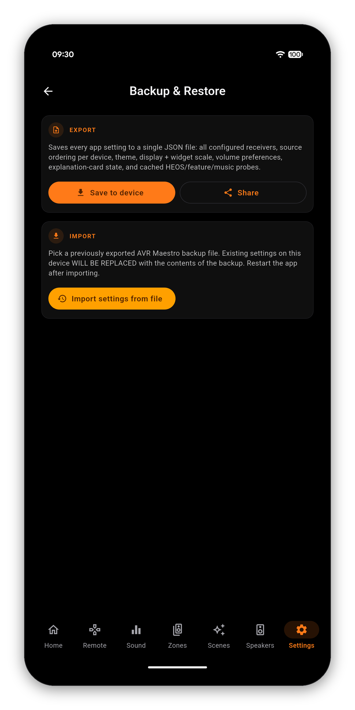

Renaming every input, picking artwork for each one, ordering your sources and building a set of Scenes is real work. It should survive a new phone, and it does: one export, one import, and the new device looks exactly like the old one.
The backup is a single .zip file named like avr-maestro-backup- followed by the date and time. Inside are your settings and the images you picked for custom icons. Nothing in it is locked to the device it came from.

| Included | Meaning |
|---|---|
| Your receivers | Every receiver you have added, with its address, and which one was selected |
| Scenes | Every Scene for each receiver, with the settings it holds, its icon and color |
| Custom icons | The images you picked for inputs and Scenes, with their shapes |
| Input order | The order you dragged your inputs into, kept per receiver |
| Slot and preset names | Names you typed for Smart Select / Quick Select slots and tuner presets |
| Audio settings per receiver | Volume step, the volume readout choices, gradual volume presets, device volume buttons and your quick-volume presets |
| Look and layout | Theme and accent color, language, text and widget size, widget colors, your Home layout, navigation and hidden tabs |
| Explanation cards | Which info cards you have dismissed, so they stay dismissed |
| Cached receiver checks | What the app already learned about each receiver (HEOS and feature checks), so the new phone does not start from scratch |
Your calibration, Speaker Presets, levels, distances, crossovers and Dirac filters live on the receiver. They are not in the backup, and importing one cannot disturb them. That cuts both ways: a backup will not restore a receiver you have factory-reset, and it does not need to - reconnecting the app to that receiver picks its settings back up from the receiver itself.
It is also a reasonable thing to take before a big reorganization. Export, rearrange your inputs and rebuild your Scenes freely, and if you preferred it the old way the file is right there.
Getting started · Manage receivers · Navigating the app · Search · Home Screen · Volume Controls · Remote · Zones · Now Playing & HEOS · Radio (FM/AM) · Scenes · Sound · Graphic EQ · Speakers · Why a control is locked · Settings · Widgets · Custom Icons · On-Screen Display · Languages · The Assistant · Home Automation · Home Assistant dashboard · Glossary
One-time purchase, no ads, no subscriptions. Connect in under a minute.